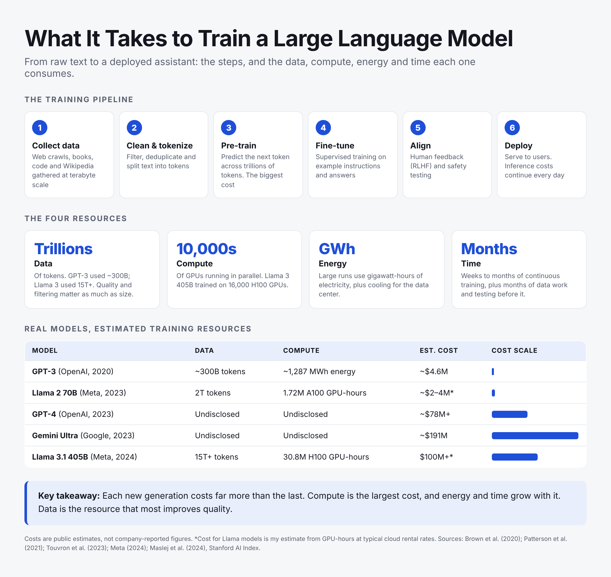

An infographic that walks through the six steps of training a generative AI model and the data, compute, energy and time each one needs, with real examples from GPT, Llama and Gemini.

Training a large language model takes huge amounts of data, hardware, electricity and time. Most people only see the finished chatbot, so the cost behind it stays hidden. This infographic makes that cost visible.
The graphic has three parts: a six-step pipeline from data collection to deployment, the four main resources (data, compute, energy, time), and a table comparing estimated training resources and costs for GPT-3, Llama 2, GPT-4, Gemini Ultra and Llama 3.1.
To explain clearly how LLMs are trained and what each resource costs, so a non-technical reader can understand why these models are expensive to build.
HTML and CSS for the design, Playwright for the PNG and PDF export, and an AI assistant to help with research and drafting.
This artifact shows I can turn technical and financial data about AI infrastructure into a clear visual that decision makers can use when judging the cost of building or adopting AI.
My first two artifacts focused on algorithms and model internals. This one covers the business side of AI: infrastructure, cost and resource planning. I also marked which numbers are estimates, which comes from my security background where knowing the confidence of your data matters.
Cost, energy use and data needs shape who can build AI models and how they are deployed. Understanding them is important for anyone planning, funding or governing AI projects.
Brown, T., et al. (2020). Language models are few-shot learners. arXiv. https://arxiv.org/abs/2005.14165
Maslej, N., et al. (2024). The AI Index 2024 annual report. Stanford Institute for Human-Centered AI.
Meta. (2024). The Llama 3 herd of models. https://arxiv.org/abs/2407.21783
Patterson, D., et al. (2021). Carbon emissions and large neural network training. arXiv. https://arxiv.org/abs/2104.10350
Touvron, H., et al. (2023). Llama 2: Open foundation and fine-tuned chat models. arXiv. https://arxiv.org/abs/2307.09288